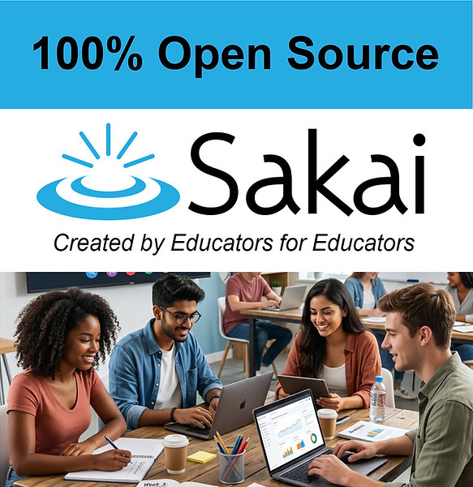

Keep Learning Open:
Donate to Sakai
Make a tax deductible donation today!
Donate via GoFundMe Donate via Apereo CiviCRM
Education should be about empowering students and educators—not profit margins. For years, the Sakai Project has provided a robust, feature-rich, and 100% open-source Learning Management System (LMS) tailored specifically for higher education and collaborative learning. Because we are open source, universities, professors, and students keep full control and ownership of their data, free from predatory licensing fees or corporate vendor lock-in. Why Sakai Matters to the Entire Educational Ecosystem Even if your institution doesn’t use Sakai, its existence helps maintain a healthy, competitive LMS marketplace. Over the years, Sakai has pioneered many industry innovations and serves as a vital incubator where students learn firsthand how to collaborate on and contribute to open-source software. Your contributions directly support: - Core Development & Security: Regular updates, QA and bug fixes, and modern infrastructure enhancements. - Accessibility & Tools: Ensuring equitable learning experiences that meet rigorous accessibility standards, with features built by educators, for educators. - Community Resources: Documentation, contributor support networks, and pathways for new institutions to adopt open-source learning. Your Donations are Tax Deductible Because the Sakai Project operates under the non-profit, Apereo Foundation, all donations are tax-deductible. Whether you can give $25, $100, or $1,000, your contribution directly sustains the future of open education. Help us Keep Learning Open. Donate to the Sakai Project today! Please Note: No goods or services are provided in exchange for your contribution. Please consult your tax adviser to determine the tax deductibility of your gift to the Apereo Foundation. Apereo Foundation (Federal Tax ID number is 46-2060554) is a public charity under section 501(c)(3) of the Internal Revenue Code. More information is available on the Apereo Foundation website at www.apereo.org. If you work for a company that matches donations, please request a match for the Apereo Foundation and double your impact.